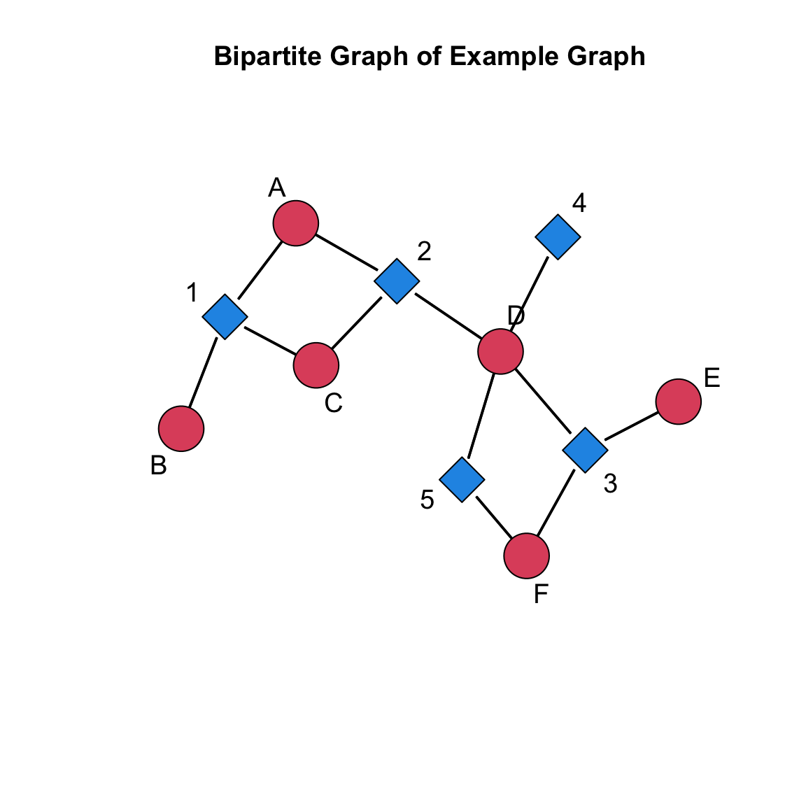
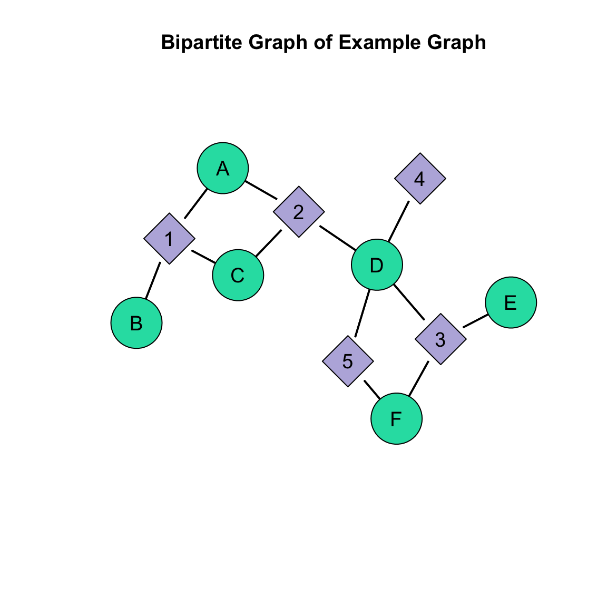
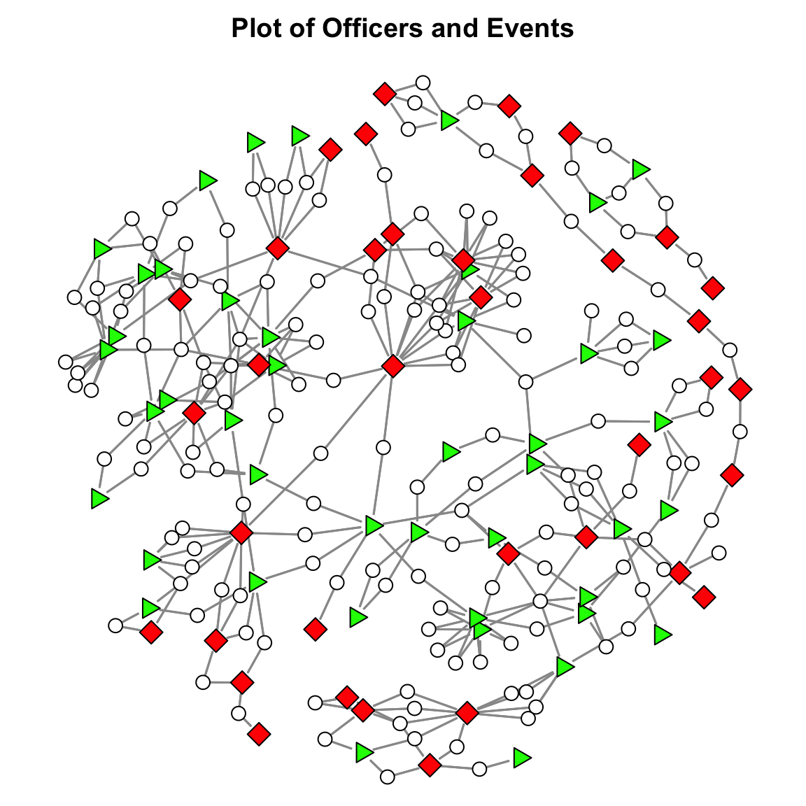

As discussed in the Bipartite Graphs & Two-Mode Networks chapter of the textbook, bipartite graphs are useful for operationalizing contexts where nodes come from two separate classes. In contrast to one-mode networks, or unipartite graphs, where edges can be incident within a particular node/vertex set, in two-mode or bipartite graphs there are two partitions of nodes (called modes), and edges only occur between these partitions (i.e. not within).
This tutorial examines various properties of bipartite graphs (e.g. density, degree centrality) and shows how to work with these structures in R using the network and sna packages.
# create the example networkbipartite_example <-rbind(c( 1,1,0,0,0 ),c( 1,0,0,0,0 ),c( 1,1,0,0,0 ),c( 0,1,1,1,1 ),c( 0,0,1,0,0 ), c( 0,0,1,0,1 ) )# assign names to the rowsrownames( bipartite_example ) <-c( "A","B","C","D","E","F" )# assign names to the columnscolnames( bipartite_example ) <-c( "1","2","3","4","5" )# print out the objectbipartite_example
1 2 3 4 5
A 1 1 0 0 0
B 1 0 0 0 0
C 1 1 0 0 0
D 0 1 1 1 1
E 0 0 1 0 0
F 0 0 1 0 1
As we can see, the matrix has 6 rows and 5 columns. So, the order of the matrix is 6 x 5.
Using the network Package
We can create an object of class network by using the as.network() function in the network package. First, take a look at the help for the as.network() function, paying particular attention to the bipartite= argument.
# call the network packagelibrary( network )# pull up the help for the as.network() function?as.network
In looking through the help file for the as.network() function, we see that the bipartite= argument says that this argument allows the count of the number of actors in the bipartite network. A bipartite adjacency matrix has order NxM, where N represents the number of rows (e.g. actors) and M represents the number of columns (e.g. events). In the bipartite= argument, we can specify the count of actors as N.
For example:
# identify the number of actors in the exampleN <-dim( bipartite_example )[1]# create a network objectbipartite_example_net <-as.network( bipartite_example, # here is our matrixbipartite = N # define the number of actors )# there 11 vertices, 6 are bipartite (in the first mode), and 12 edgesbipartite_example_net
Now that our object is created, we can take a look at a plot of the network using the gplot() function. Before we do so, let’s take a look at a few changes we need to make. First, note that the gplot() function reads the labels by starting with the names in the first mode, then the names in the second mode. We can see this by printing the vertex labels the function assigns with the network.vertex.names() function.
# look how it reads the labelsnetwork.vertex.names( bipartite_example_net )
[1] "A" "B" "C" "D" "E" "F" "1" "2" "3" "4" "5"
We can see that it first labels the actor nodes (i.e. A, B, C, D, E, and F) and then names the event nodes (i.e. 1, 2, 3, 4, 5).
Second, we need to tell the gplot() function that the network has two modes, not one mode. We do this using the gmode= argument, which automatically changes the colors and the shapes of the nodes when we specify that the graph is twomode. Third, we need to set the usearrows= argument to FALSE so that the arrowheads are turned off. (Note that therearedirected two-mode networks in which you would use arrowheads, but we will skip that for now). Let’s check it out:
# load the sna library to get the gplot() functionlibrary( sna )# set the seed to reproduce the plot layoutset.seed( 507 )# execute the plotgplot( bipartite_example_net, # our network to plotlabel =network.vertex.names( bipartite_example_net ), # the labels we wantgmode ="twomode", # indicate it is two modesusearrows =FALSE, # turn off the arrowheadsvertex.cex=2, # size the nodes label.cex=1.2, # size the labelsmain="Bipartite Graph of Example Graph"# add a title)

As we saw in the Basics of Network Visualization tutorial, there are a lot of options that help us convey important information about a network. When we are working with a two mode network object, we need to make sure that whatever information we pass to the nodes matches the order of the nodes in the network. For example, we saw above that the network first labels the actor nodes and then labels the event nodes. If we wanted to choose a different set of colors, for example, using the vertex.col= argument, then we would want a set of colors for the actors and a set of colors for the events. Then, we would want these combined into a single object. Let’s do that here to demonstrate:
# identify the number of actors in the exampleN <-dim( bipartite_example )[1]# identify the number of events in the exampleM <-dim( bipartite_example )[2]# set the actor colorsactor.col <-rep( "#1fdeb1", N )# set the event colorsevent.col <-rep( "#bab4de", M )# now combine them into a single vector of colorsnode_col <-c( actor.col, event.col )# take a looknode_col
Now that we have a set of colors that match the order of the nodes, we can pass it into the gplot() function using the vertex.col= argument:
# set the seed to reproduce the plot layoutset.seed( 507 )# execute the plotgplot( bipartite_example_net, # our network to plotlabel =network.vertex.names( bipartite_example_net ), # the labels we wantgmode ="twomode", # indicate it is two modesusearrows =FALSE, # turn off the arrowheadsvertex.cex =3, # size the nodes label.cex =1.2, # size the labelslabel.pos =5, # position the labels on the nodesmain="Bipartite Graph of Example Graph", # add a title# here is the addition to what we had above:vertex.col = node_col # add the colors)

This setup, where we define the actor properties and event properties and combine them into a vector, will be used for any attribute we want to attach to the nodes. We will work through more examples below illustrating this point.
Structural Properties of Bipartite Graphs/Two-Mode Networks
As reviewed in the Bipartite Graphs & Two-Mode Networks chapter of the textbook, there are multiple structural properties of bipartite graphs that we can examine to help us describe the network.
Density
The density of a bipartite graph is the number of observed edges in the graph, L, divided by the number of nodes in the first mode, N, multiplied by the number of nodes in the second mode, M. That is:
\[\frac{L}{N \times M}\]
In other words, the density of the graph is the number of edges we observed divided by the maximum number of possible edges in the graph. We can calculate this using the sum() and dim() functions.
# identify the number of edges in the graphL <-sum( bipartite_example )# identify the number of actors in the exampleN <-dim( bipartite_example )[1]# identify the number of events in the exampleM <-dim( bipartite_example )[2]# calculate the densitydensity_bipartite_example <- L / ( N * M )# check it outdensity_bipartite_example
[1] 0.4
What is the interpretation of the density?
Degree Centrality
For a bipartite graph there are two degree distributions:
The distribution of ties in the first mode
The distribution of ties in the second mode
We can calculate the degree centrality scores for each node in each corresponding vertex set by taking the row sum for N nodes in the first mode and taking the column sum for M nodes in the second mode. We can do so using the rowSums() and colSums() functions, respectively.
# raw scores for actorsactor_deg <-rowSums( bipartite_example )actor_deg
A B C D E F
2 1 2 4 1 2
# raw scores for eventsevent_deg <-colSums( bipartite_example )event_deg
1 2 3 4 5
3 3 3 1 2
How should we interpret the centrality scores for each node set? Well, it is a bit difficult when just looking at it here. So, we can calculate a summary statistic, such as the mean, to evaluate the distribution of centrality scores for each node set.
Mean Degree Centrality
As before, we could examine the central tendency by examining the mean degree for each node/vertex set. We take the sum of the edges, \(L\) and:
for the first node set we divide by \(\frac{L}{N}\), the number of nodes in that set.
for the second node set we divide by \(\frac{L}{M}\), the number of nodes in that set.
# mean degree for actorsmean_actor_deg <- L / N# mean degree for eventsmean_event_deg <- L / M# an alternative is to just use the mean() function with the degree datamean( actor_deg )
[1] 2
mean( event_deg )
[1] 2.4
How should we interpret the mean centrality score for each node set? The mean for the actor node set indicates that, on average, each node has 2 ties. The mean for the event node set indicates that, on average, each event has 2.4 ties.
Standardized Degree Centrality
Degree centrality scores for each node/vertex set not only reflects each node’s connectivity to nodes in the other set, but also depend on the size of that set. As a result, larger networks will have a higher maximum possible degree centrality value. Solution?
Standardize!!!
As we saw for unipartite graphs, we can adjust the raw degree centrality scores by taking into account the size of the graph. In a bipartite graph, we can standardize, or normalize, by dividing the raw centrality scores by the number of nodes in the opposite vertex set. That is, for the centrality scores in the first mode we divide by M and for the centrality scores in the second mode we divide by N.
In networks with lots of nodes, this information might be useful for visualizing differences in nodes degree centrality. Let’s create a plot with the standardized scores where larger degree centrality influences the size of the nodes. As we did above, we will want to create a single object that has these sizes. We can do this using the c() function.
# define the standardized scores for actorsactor_size <- actor_deg / M# define the standardized scores for eventsevent_size <- event_deg / N# combine these to use in the plotv_size <-c( actor_size, event_size )# set the seed to reproduce the plot layoutset.seed( 507 )# execute the plotgplot( bipartite_example_net, # our network to plotlabel =network.vertex.names( bipartite_example_net ), # the labels we wantgmode ="twomode", # indicate it is two modesusearrows =FALSE, # turn off the arrowheadslabel.cex =1.2, # size the labelsmain ="Bipartite Graph of Example Graph", # add a titlevertex.col = node_col, # add the colors# here is the addition to what we had above:vertex.cex = v_size +0.5# set the size (add 0.5 so it is not too small) )
Now, let’s work with a real example. As discussed in the Bipartite Graphs & Two-Mode Networks chapter, Young and Ready (2015) examined how police officers develop cognitive frames about the usefulness of body-worn cameras. They argued that police officers’ views of body-worn cameras influence whether they use their cameras in incidents and that these views partly result from sharing incidents with other officers where they exchanged views about the legitimacy of body-worn cameras.
This network is available in SNACpack under the name officer_event_net. We can type the name of the network to see it’s properties:
# load SNACpack library( SNACpack )# print out the networkofficer_event_net
If you inspect the output, you will see that there are 81 officers (the N dimension of the sociomatrix) and 153 events (the M dimension of the sociomatrix).
Plotting the Network
Now, let’s create a plot of the network. To aid in visualization, we need to create a variable indicating whether the officer was in the treatment (i.e. received a body-cam) or control group. If you look at the network.vertex.names( officer_event_net ) object, you will see that the officer ids start with “C” or “T”:
The first 81 elements are officers. For the officer ids, the “C” prefix indicates a control officer and a “T” prefix indicates a treatment officer. The first 44 ids are for control officers and the subsequent 37 ids are for treatment officers. The remaining 153 correspond to events. We can use this info to create a variable that indicates treatment status.
We will use this information to create an attribute. To do so, we will use the rep() function which repeats a sequence of numbers of characters.
# create a variable using the information in the idsstatus <-c( rep( "Control", 44 ), # repeat "Control" 44 times because there are 44 control officersrep( "Treatment", 37 ), # repeat "Treatment" 37 times because there are 37 control officersrep( "Incident", 153 ) # repeat "Incident" 153 times because there are 153 incident )# create colors for the plotvcol <- statusvcol[ status =="Control" ] <-"green"# make controls greenvcol[ status =="Treatment" ] <-"red"# make treatment group redvcol[ status =="Incident" ] <-"white"# make events white# create the shapesvsides <-rep( 0, length( status ) )vsides[ status =="Control" ] <-3# make controls trianglesvsides[ status =="Treatment" ] <-4# make treatment group squaresvsides[ status =="Incident" ] <-50# make events circles# create the node sizesnsize <-c(rep( 2, 81 ), # sizes for officersrep( 1.2, 153 ) # size for the events )
Now, we can plot this using the gplot() function.
# adjust the margins to cut some white spacepar( mar=c( 0, 0, 2, 0 ) )# set the seed for the plotset.seed( 507 )# plot itgplot( officer_event_net,gmode="twomode",usearrows=FALSE,displayisolates=FALSE,vertex.col=vcol,vertex.sides=vsides,edge.col="grey60",edge.lwd=1.2,vertex.cex = nsize,main ="Plot of Officers and Events")

Structural Properties of the Network
Now, let’s take a look at several properties of the graph: density, degree centrality, and mean degree centrality.
Density
Remember, the density is the total number of edges divided by N x M.
# coerce to a matrix for ease of working with the objectofficer_event_mat <-as.matrix( officer_event_net )# create the N and M objectsN <-dim( officer_event_mat )[1]M <-dim( officer_event_mat )[2]# identify the number of edges in the graphL <-sum( officer_event_mat )L / ( N * M )
[1] 0.02791899
The density for the this network is 0.03. What is the interpretation of the density for this network?
Degree
Now, let’s take a look at the degree distributions.
# raw scores for officersofficer_deg <-rowSums( officer_event_mat )# raw scores for incidentsincident_deg <-colSums( officer_event_mat )
Mean Degree Centrality
Now, we can examine the central tendency by examining the mean degree for each node/vertex set. We take the sum of the edges, \(L\) and:
for the first node set we divide by \(\frac{L}{N}\), the number of nodes in that set.
for the second node set we divide by \(\frac{L}{M}\), the number of nodes in that set.
# mean degree for officersmean_officer_deg <- L / Nmean_officer_deg
[1] 4.271605
# mean degree for incidentsmean_incident_deg <- L / Mmean_incident_deg
[1] 2.261438
# an alternative is to just use the mean() function with the degree datamean( mean_officer_deg )
[1] 4.271605
mean( mean_incident_deg )
[1] 2.261438
What is the interpretation of the mean degree for each node set?
Test Your Knowledge Exercises
Explain the difference between bipartite graphs and unipartite graphs. Provide examples of contexts where each might be used.
What is the purpose of the bipartite argument in the as.network() function? How does it relate to the dimensions of the adjacency matrix?
Describe the role of the gmode argument in the gplot() function. What happens when it is set to "twomode"?
How would you create a set of colors for the nodes in a bipartite graph, ensuring that actor nodes and event nodes have different colors? Write the R code to demonstrate this.
How do you compute the degree centrality for actor nodes and event nodes in a bipartite graph? Provide the R code to do this.
Interpret the mean degree centrality for the officer and incident nodes in the police officer network. What do these values tell you about the structure of the network?
When visualizing a bipartite graph, why is it important to ensure that node attributes (e.g., color, size) are correctly ordered? What steps would you take to ensure this in R?
Create a plot of a bipartite graph where node sizes reflect their standardized degree centrality and node colors differentiate between actors and events.
Why is it important to examine both the raw and mean degree centrality scores when analyzing bipartite graphs? What insights can each provide?
Tutorial Summary
This tutorial explored bipartite graphs, or two-mode networks, as a foundational tool for representing relationships between two distinct node sets, such as individuals and events. Crime analysts often work with these graph structures, so we learned in this tutorial how to construct these networks through adjacency matrices, transform them into network objects, and visualize them using the gplot() function from the sna package. We also reviewed several properties of these networks, such as calculating network density and degree centrality.
Young, Jacob T. N., and Justin T. Ready. 2015. “Diffusion of Ideas and Technology: The Role of Networks in Influencing the Endorsement and Use of on-Officer Video Cameras.”Journal of Contemporary Criminal Justice 31 (3): 243–61. https://doi.org/10.1177/1043986214553380.